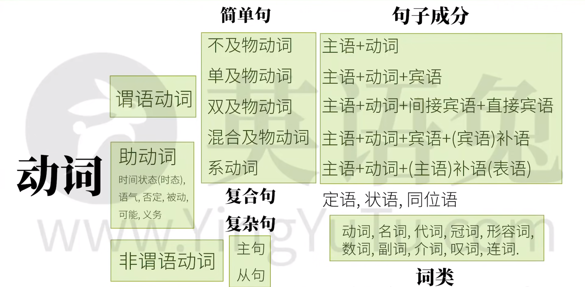

语法框架
介绍
英语语法的目的：造句。
句子的成分
什么 怎么样 = 主语 + 谓语
“什么”和“怎么样”分别对应了两个最基本的“句子成分”——“主语”（subject）和“谓语”（predicate）。
主语一般为人或物，不管抽象或者具体。谓语为“动作”或发生了什么事。广义上的“动作”是语法上的“动词”。
有哪些“动作”（动词）
5 种动词 -> 5 种”基本句型“
可以独立完成的动作： 不及物动词
主语+（不及物）动词
Papa Rabbit sleeps.
有 一个 动作的承受者： 单及物动词
主语+（单及物）动词+宾语
Papa Rabbit likes you.
有 两个 动作的承受者： 双及物动词
主语+（双及物）动词+间接宾语+直接宾语
Papa Rabbit teaches you English.
其中”you“为间接宾语，”English“为直接宾语
只有一个动作承受者（不同于 2）： 复杂及物动词
主语+（复杂及物）动词+宾语+（宾语）补语
Papa Rabbit considers you smart.
其中”smart“为（宾语）补语
把这个词后面的信息赋予给前者： 系动词
主语+（系）动词+（主语）补语
主语补语也是表语
Papa Rabbit is tall. / Papa Rabbit <- tall. / Papa Rabbit = tall.
Papa Rabbit looks tall. / Papa Rabbit <- tall.
把后者信息赋予前者
快速小结
英语中的所有句子，当拆到不能再拆后，都是在说： 什么 怎么样 。”什么“是语法中的主语，”怎么样“是谓语，谓语都有一个核心动词，叫做谓语动词。
谓语动词
无承受者
主语 + 动词
一个承受者
主语 + 动词 + 宾语
两个承受者
主语 + 动词 +（间接） 宾语 + （直接） 宾语
一个承受者（不同于 2）
主语 + 动词 + 宾语 + （宾语） 补语
赋予信息
主语 + 动词 + （主语） 补语 （表语）
谓语和谓语动词是有区别的，句子主语后面的余下句子部分都是谓语，谓语动词只是谓语的一部分。与谓语动词相对的，还有 非 谓语动词。
句子成分
- 主语 Subject
- 谓语动词（~谓语） Predicate Verb
- 宾语 Object
- 宾语补语 Object Complement
- 主语补语（表语） Subject Complement
定语 Attributive
主要用来修饰主语或宾语
The little white rabbit ate a large carrot.
“The little white”是”rabbit”的定语，“a large”是“carrot”的定语
状语 Adverbial
主要用来修饰谓语动词
The rabbit ate quickly.
“quickly”就是“ate”的状语
同位语 Appositive
主要用来再把主语或宾语说一遍
Papa Rabbit, an English teacher, eats a carrot.
“an English teacher”其实就是把“Papa Rabbit”用不同方式再说一遍，在这里算是和主语同等地位
简单句的组合
以上所说的都是简单句，简单句就是不能再拆否则句意不完整的句子。简单句互相组合就形成了 Compound Sentence 复合句，还有 Complex Sentence 复杂局。复合句是简单句的并列组合，而复杂句是简单句的嵌套组合。
一个句子嵌套另一个句子，在英语语法上分别叫做 主句 和 从句 。从句说白了就是把简单句修改一下来充当另一个句子的句子成分。
从句
- 名词性从句
- 主语从句
- 宾语从句
- 表语（主语补语）从句
- 同位语从句
- 定语从句
- 状语从句
词类
英语的十大词类。
名词 Nouns
表人和物
Papa Rabbit is a rabbit.
其中“Papa Rabbit”是专有名词，“rabbit”是普通名词
冠词 Articles
说明人和事物
Papa Rabbit is a rabbit.
代词 Pronouns
代替人和物
I am a rabbit.
形容词 Adjectives
形容人和物
I am a smart rabbit.
数词 Numerals
表数量
I ate two carrot.
副词 Adverbs
修饰动作或形容词等等
I ate two carrots quickly.
介词 Prepositions
表示和其他词关系的词
I ate two carrots with chopsticks.
叹词 Interjections
表感叹
Ah, the carrots is tasty!
连词 Conjunctions
连接词和句子
I ate two carrots and a potato, because I was hungry.
- 动词 Verbs
句子成分和句子中的词类是完全不同的概念。每一种句子成分，除了谓语动词是动词，其他都有可能包含不同的词类。
谓语动词的“三大本领”
表示动作的 时间 ：现在，过去，将来，从过去某个时间点“算将来”（过去将来）
比如动作可能在过去或将来
表示动作的 状态 ：未说明（一般），完成，进行，不但完成而且继续（完成进行）
比如动作可能是已经完成的状态或者正在进行的状态
表示动作的 假设，情感等
表示动词的语气
If I were a rabbit… 虚拟语气
I ate a carrot… 陈述语气
Eat this carrot and… 祈使语气
1 和 2 合在一起称为 时态 。时间和状态组合，一共有 16 种时态：
助动词
谓语动词本身往往是不能够独立完成之前说的那些本领，以及另外一些其他的本领，而且谓语动词独自也无法完成比如表示否定，可能性，必须性等意思。想要谓语动词充分发挥，我们必须用到另一类经常和动词一起用的词帮助完成任务， 助动词 。
Eat
为了协助它表示吃过了（完成态），就要用到助动词： have, eg, have eaten.
为了协助它表示正在吃（进行态），就要用到助动词： be, eg, is eating.
为了协助它表示是“被”吃，就要用到助动词： be, eg, is eaten.
为了协助它表示有能力吃，就要用到助动词： can, eg, can eat.
为了协助它表示有可能吃，就要用到助动词： might, eg, might eat.
为了协助它表示有义务吃，就要用到助动词： must, eg, must eat.
为了协助它表示否定，不吃，就要用到助动词： do, eg, do not eat.
但是很多助动词特别喜欢伪装，它们除了做助动词（没有实义，只是帮助谓语动词而已），还可以做实义动词，甚至其他词性。比如 can 还可以是易拉罐，might 可以是力量，must 可以是发霉，do 可以是做某事，have 可以是拥有，be 可以是存在。
非谓语动词
动词除了充当句子中的谓语动词，还有可能充当：主语、宾语、宾语补语、主语补语、定语、状语、同位语等。只不过需要把谓语动词修改一下，改成非谓语动词。不仅如此，非谓语动词几乎可以 取代所有的从句 ，从而 简化句子 。只不过这样的动词就不再具有表示动作时间、状态、语态、语气的功能。
它们是以不同的形式出现在句中，包括：
- 动词不定式，e.g. to eat
- 现在分词，e.g. eating
- 动名词，e.g. eating
- 过去分词，e.g. eaten
总结
英语语法的核心就是 动词 。动词能够串起几乎所有语法概念。
